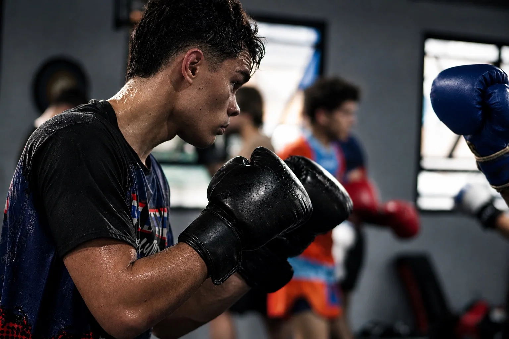
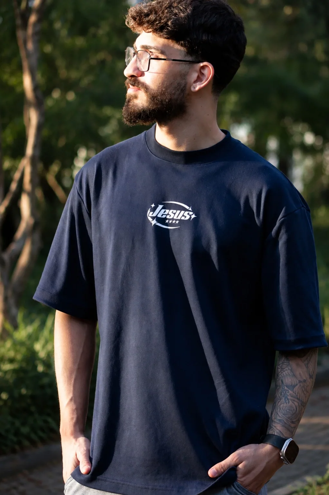

Histórias reais.
Imagens que permanecem.
Fotografia, movimento e narrativas visuais. Um olhar autoral sobre pessoas, marcas e momentos.
Explorar portfólio ↗Projetos selecionados.
Da delicadeza de um retrato à intensidade do esporte. Cada projeto tem sua própria narrativa.


Intensidade em movimento.
Ritmo, técnica e energia. Uma história que ganha vida em cada movimento.

O olhar por trás da Zion Cine.
A Zion Cine nasceu da vontade de transformar momentos reais em imagens que carregam emoção, movimento e identidade.
Meu trabalho busca enxergar além do óbvio: a expressão espontânea, a luz que muda tudo, o instante que não volta. Cada história merece ser contada com intenção.
Vamos criar juntos ↗Experiências em imagem.
Retratos e ensaios pessoais com personalidade e sensibilidade.
Registros de aniversários e momentos que merecem permanecer.
Energia, intensidade e movimento em cada fotografia.
Imagens que comunicam a identidade de profissionais e empresas.
Vamos contar a sua história?
Entre em contato para conversar sobre sua ideia.
Enviar mensagem ↗Contato provisório: configure seu e-mail, WhatsApp e Instagram antes de publicar.